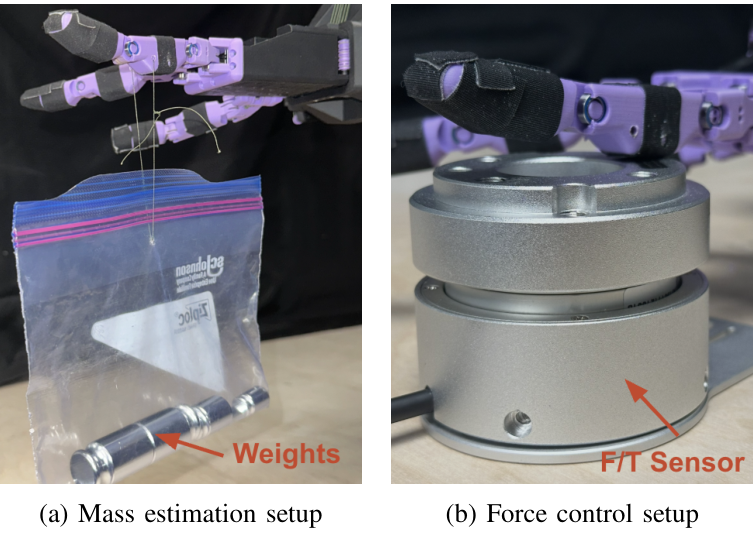
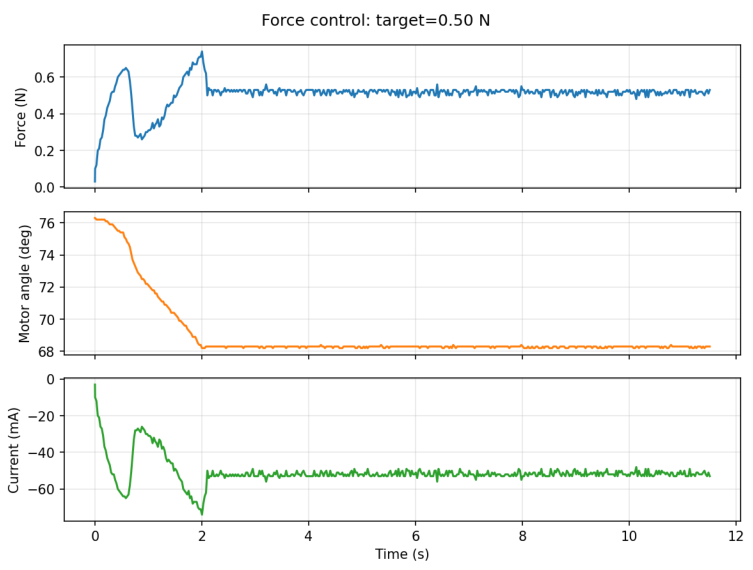

PropHand: A Force-Aware Open-Source Dexterous Robot Hand
IEEE/RSJ International Conference on Intelligent Robots and Systems (IROS) 2026
1 Carnegie Mellon University
Abstract
Dexterous manipulation is an emerging capability for general-purpose robots, but scaling learning-based policies to contact-rich tasks is bottlenecked by hardware that is either expensive to instrument or poorly suited for force-aware control. In particular, cost-effective force sensing is critical for robot policy learning, yet most open-source dexterous hands lack reliable joint-torque sensing and torque control due to underactuation, nonlinear and configuration-dependent transmissions, high gear ratios that obscure backdrivability, and limitations in commodity electronics and firmware. This work presents PropHand, an open-source tendon-driven dexterous hand designed to make force-aware manipulation accessible and reproducible. PropHand combines mechanically transparent tendon routing with a near-linear actuator-to-joint mapping, enabling consistent calibration and low-bias force inference from motor current. A low gear ratio and torque-controlled actuation improve backdrivability and torque transparency, allowing high-frequency proprioceptive joint-torque sensing without specialized tactile skins. In experiments, PropHand accurately and repeatably estimates force from motor current (from 150 to 350 g with an average error of 6.3%), regulates contact force through torque control (reaching target forces from 0.5 to 4.0 N with an average error of 2.94%), and successfully performs manipulation tasks requiring dynamic and compliant behaviors.
Our goal. We aim to make force-aware, torque-controlled dexterous hand hardware and a platform for data collection accessible to the academic community.
Demonstrations
Experiments
We evaluate mass estimation from motor-current measurements, estimation repeatability, and closed-loop contact-force control. Known loads and an external force/torque sensor provide experimental references.
Quantitative evaluation
| Experiment | Test condition | Mean percentage error | Paper |
|---|---|---|---|
| Mass estimation | Loads from 150–350 g | 6.81% | Table II |
| Mass-estimation repeatability | Eight trials at 275 g | 2.72% | Table III |
| Contact-force regulation | Eight targets from 0.5–4.0 N | 2.94% | Table IV |
Mass estimation from motor current
PropHand estimates joint torque from motor current using a calibrated actuator-to-joint transmission model. Known hanging masses are used to evaluate estimation accuracy over 150–350 g.
Force-control experiments use motor-current feedback; the external force/torque sensor is used for independent evaluation.

Force-estimation test
Recorded finger contact and a live measurement trace.

Closed-loop contact-force regulation
A 50 Hz outer loop adjusts the commanded joint angle using the current-based force estimate. After a short transient, contact force settles near the target.
The paper reports an average force-control error of 2.94% across eight target forces between 0.5 and 4.0 N.
Original results tables (II–IV)
Results above follow Tables II–IV. The original abstract reports 6.3% force-estimation error; Table II and the experimental text report 6.81%. The abstract is reproduced as supplied.
Reference
BibTeX
@inproceedings{zhang2026prophand,
title = {PropHand: A Force-Aware Open-Source Dexterous Robot Hand},
author = {Zhang, Qiushi and Zhang, Xilin and Ichnowski, Jeff},
booktitle = {IEEE/RSJ International Conference on Intelligent Robots and Systems (IROS)},
year = {2026}
}